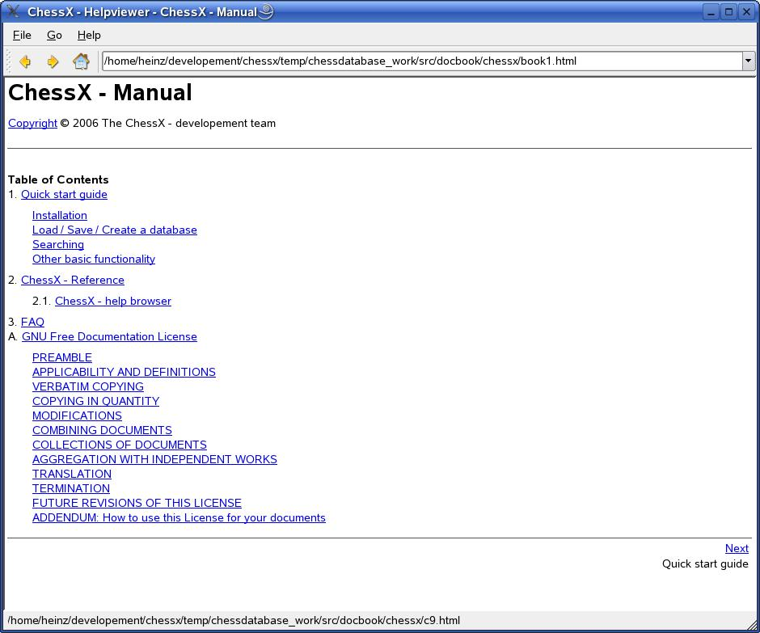

This is the first version of the ChessX - help browser. The code is based on the help browser example from Qt 3.0 - Trolltech™

ChessX - helpbrowser
What is working:
Initially load and display html pages
Open a html page
Navigate - forward - backward
Navigate - using the history drop down
Save/read windowstate and main help page in an QSettings file
Print the help page
TODO:
Define and use standard for the "About ChessX" dialog for ChessX
Define and use standard for icons used in ChessX
Write help pages